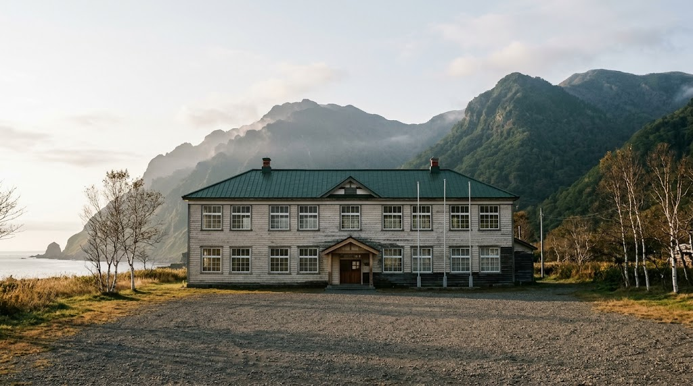
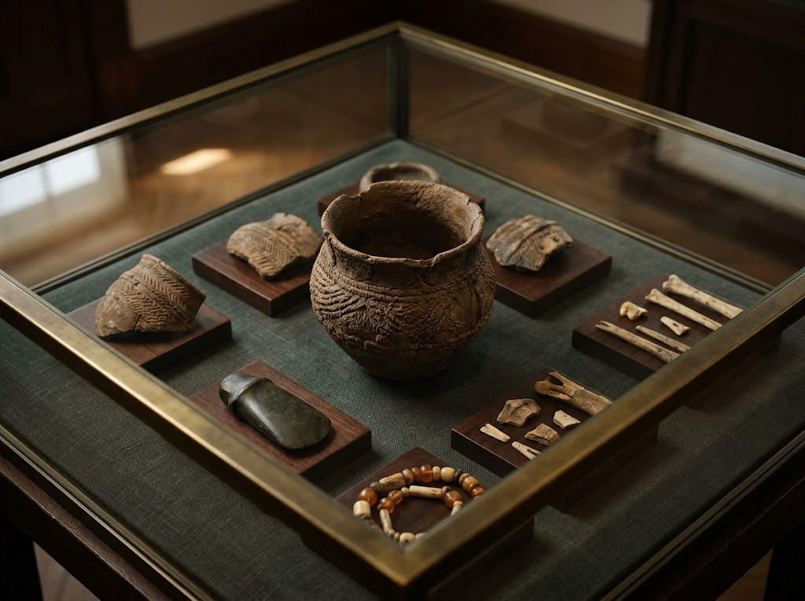
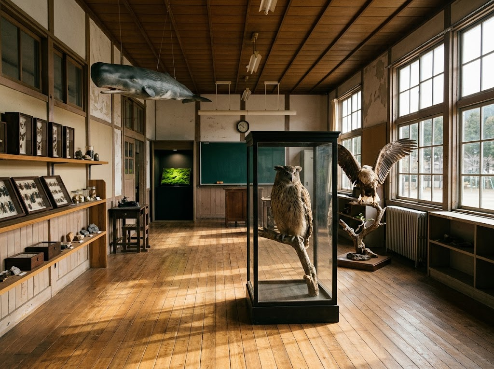

北海道 知床・羅臼
古い校舎に、知床の千年が眠っている。縄文の土器から、森と海の生き物まで。
入館無料かつて子どもたちの声が響いた植別小中学校の校舎が、いま羅臼の記憶を伝える資料館になっています。木の床、広い廊下、大きな窓。その教室ごとに、遺跡の出土品や知床の動植物が静かに並びます。
羅臼町が2011年12月に開館しました。縄文時代から続く地域の歴史、アイヌ文化やオホーツク文化の資料を、まとめて見られる場所です。

260点
国指定重要文化財に含まれる、北海道松法川北岸遺跡の出土品を展示しています。オホーツク文化と擦文文化が混ざり合う、縄文後期の「トビニタイ文化」の資料が豊富に揃います。

知床の自然を代表する大きな鳥、シマフクロウとオオワシの剥製。昆虫の標本、クジラの模型。そして生きたまま展示されているヒカリゴケ（北海道天然記念物）。
縄文からの発掘品やアイヌの文化、動植物まで展示しており、解説も詳しいです。飼育したクマを天に送る熊送りの儀式など知らない文化にも触れることができました。
旧植別小学校を資料館に。入館料無料。展示は非常に充実しています。アンケートに答えるとプレゼントがもらえます。
| 施設名 | 羅臼町郷土資料館 |
|---|---|
| 住所 | 目梨郡羅臼町峯浜町307-1 |
| 電話番号 | 0153-88-3850 |
| 休館日 | 土日、祝祭日、年末年始 （7月1日～9月上旬は無休） |
| 入館料 | 無料 |
| 公式サイト | rausu-town.jp |